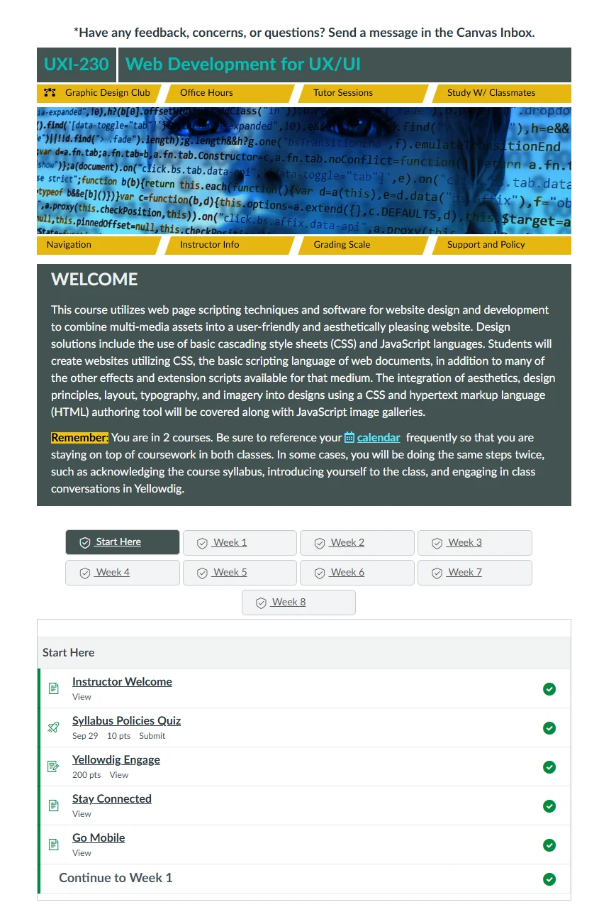
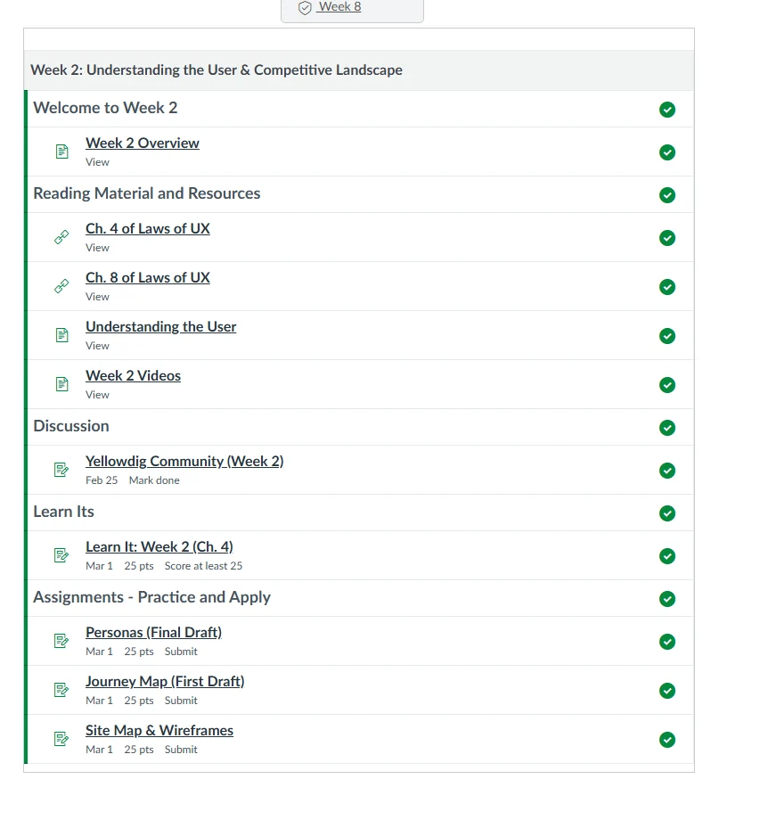
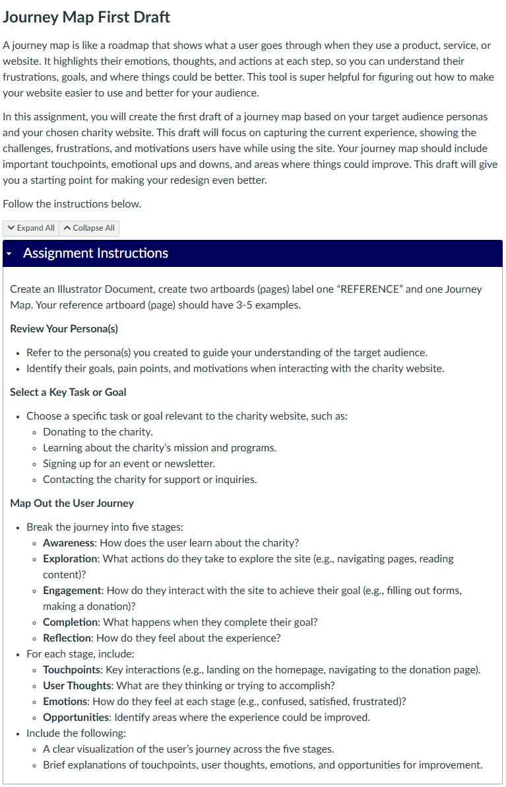

Complete Course Design: UNV-101UX
A course I designed from beginning to end, including Canvas layout, course orientation, onboarding steps, and weekly navigation.
View Full Screenshot →Designing and developing online courses, meaningful learning activities, and digital learning experiences that connect instructional objectives with practical application.
My instructional design experience includes developing complete online courses, building learning experiences in Canvas, creating assignments and assessments, and incorporating interactive eLearning and multimedia resources.
I approach course development by considering what learners need to know, how they will engage with the material, and how they will apply what they have learned.
My background in program leadership also gives me a broader perspective on curriculum development. I understand how individual courses fit within a larger program and how consistent design, clear expectations, and appropriate support contribute to the learner experience.
I designed and developed this online course to help students build the academic and technology skills needed to succeed in an online learning environment.
The course addresses important areas such as study strategies, time management, academic goal setting, communication, and foundational technology skills.
My work included developing the course structure, organizing weekly learning experiences, preparing instructional content, and designing activities that helped students practice essential skills.
This project demonstrates my ability to design an entire course, rather than only individual lessons or learning activities.
It also reflects my experience developing learning experiences that address student readiness, engagement, and success.
I developed and customized Canvas course environments to create consistent, organized learning experiences.
The course layouts included clear navigation, weekly learning modules, important course information, and links to academic support resources.
Designed Canvas course layouts that help students locate weekly content, course materials, assignments, and support resources.
Incorporated course orientation, instructions, technology information, and academic support resources to help learners get started.
Organized instruction into manageable weekly experiences that connect resources, discussions, activities, and assignments.
Created structured learning pathways that make it easier for students to understand what they need to complete each week.
Examples include Canvas course structures developed for Student Success & Technology Foundations and Web Development for UX/UI.
My course development work also includes creating instructional materials, assignments, and assessments that require learners to apply what they have studied.
This course introduces students to user experience and interface design principles through structured learning activities and practical assignments.
For example, Week 2 focuses on understanding users and the competitive landscape.
The weekly learning experience includes course resources, instructional materials, discussion activities, knowledge checks, and applied design assignments.
In this assignment, students develop a user journey map based on a target audience and a selected charity website.
Students examine the experience from the user's perspective, identifying goals, motivations, emotions, pain points, and opportunities for improvement.
The assignment requires students to connect user research with practical design decisions and communicate their findings through a visual deliverable.
I use assignments that move beyond recalling information and encourage learners to apply their knowledge, analyze real situations, and develop meaningful work.
In addition to individual assignments, I developed learning activities that support research, problem-solving, practice, feedback, and revision throughout a course.
The assignment materials include user-centered design analysis, usability testing, personas, and opportunities to improve work based on feedback.
These activities encourage students to research user needs, identify design problems, evaluate experiences, and recommend improvements.
These examples show Canvas course layouts, weekly learning structures, and applied assignments developed as part of my instructional design and curriculum work.
A course I designed from beginning to end, including Canvas layout, course orientation, onboarding steps, and weekly navigation.
View Full Screenshot →
A customized Canvas course shell featuring clear navigation, course information, weekly modules, and student support resources.
View Full Screenshot →
Week 2 of UX/UI Design Foundations, showing the organization of readings, videos, discussion, practice, and applied assignments.
View Full Screenshot →
An applied assignment requiring students to explore user personas, goals, touchpoints, emotions, and opportunities for improving a website experience.
View Full Screenshot →Selected examples of online instructional materials and course interfaces. Live Canvas courses are not publicly accessible.
Across course and learning development projects, I focus on aligning instructional goals with content, practice, and assessment.
Identify learner needs, learning goals, and the skills students are expected to develop.
Organize objectives, instructional content, learning activities, and assessment methods.
Develop course materials, interactive content, assignments, and online learning experiences.
Review learning experiences, gather feedback, and make improvements to content and course design.
I have developed and incorporated interactive learning materials into larger online courses to support understanding, engagement, and practical application.
Introduces inclusive design principles and encourages learners to consider how different users experience digital products and services.
Includes visual examples, accessibility considerations, learner scenarios, and opportunities to apply design principles.
Introduces foundational graphic design concepts including visual hierarchy, balance, contrast, alignment, and typography.
Uses visual explanations and examples to help learners recognize design principles.
Explores learning strategies that can help students improve their study habits and academic success.
Covers learning myths, effective study methods, and strategies such as spaced practice and retrieval practice.
These descriptions represent learning materials used in online coursework. Interactive demonstrations are not publicly linked on this page.
I developed an instructional introduction video using Synthesia for a self-paced course on creating professional marketing materials.
The video introduced learners to the course and provided a consistent multimedia experience for independent study.
This project demonstrates my experience using AI-assisted video development tools to create digital learning resources.
Video Sample Available Upon RequestSharing of the video is subject to applicable content permissions.
My instructional design and course development experience includes a range of learning, content development, and multimedia tools.
Canvas, Blackboard, Brightspace (D2L), and Moodle.
Articulate 360, Storyline, and Rise.
Synthesia, Camtasia, Adobe Creative Cloud, and Figma.
Universal Design for Learning, accessibility practices, instructional alignment, and course quality review.
My experience combines hands-on instructional design with leadership across curriculum development, academic programs, and learning technology.
I understand both the details involved in creating an individual learning experience and the larger planning, quality, and implementation needs of an entire program.